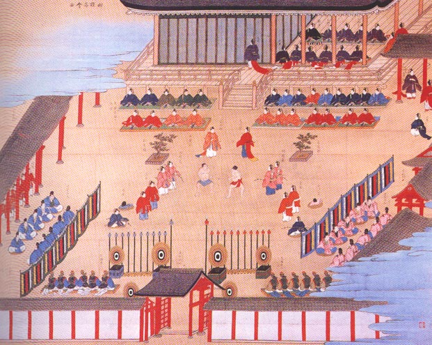

History is the study of the past, encompassing all aspects of human existence.
It examines a wide range of subjects, including politics, economics, culture, social structures, and more.
Historians use various methods to investigate the past, such as analyzing documents, artifacts, and other sources of information.
History is not just a collection of facts but also a process of interpretation and analysis, where historians try to understand the causes and consequences of past events.
There are different schools of thought within history, such as cyclical theory, linear theory, and the Great Man theory, each offering a different perspective on how history unfolds.